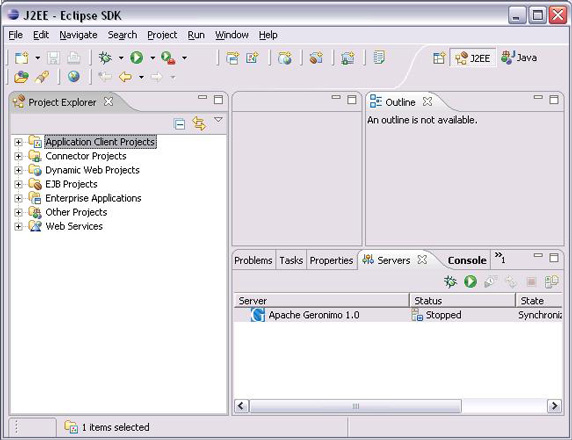

Design Principles
Brackets should be:
- Code Centric
- Lightweight
- Beautiful
Main Concern
Hierarchy of Importance
Comparisons
Browsers
IDE
- Textmate
- Sublime Text 2
- Eclipse
Potential Areas
- Application Menus
- Context Menus
- Toolbar
- Status Bar
- Panel
- Dialogs
- Inline Editor
Recommendations
- Try not to control
- Lead by example
- Documentation & Guidelines
Guidelines
- Limit the number of top level menus
- Avoid blatant branding/marketing
- Avoid using more than 2 layers of sub menus
Guidelines
- Contextually relevant
- Limit functionality
- Recognize limited discoverability
- Consider Application menu and keyboard shortcuts
Toolbar

Guidelines
- Recommended for stateful indicators
- Minimal design icons (limited color)
- Avoid blatant branding/marketing
- Make optional
Status Bar
not recommended
Panels

not recommended
Guidelines
- Should be contextually relevant
- Easy to hide
- Consider using dialogs for settings
Guidelines
- Recommended for settings
- Potentially useful for property changes (consider inline editor)
- Consideration: freezes ui
Guidelines
- Pertains to or effects code contextually
- Intended primarily for editing
- Can be used for previewing
- Usually temporary action